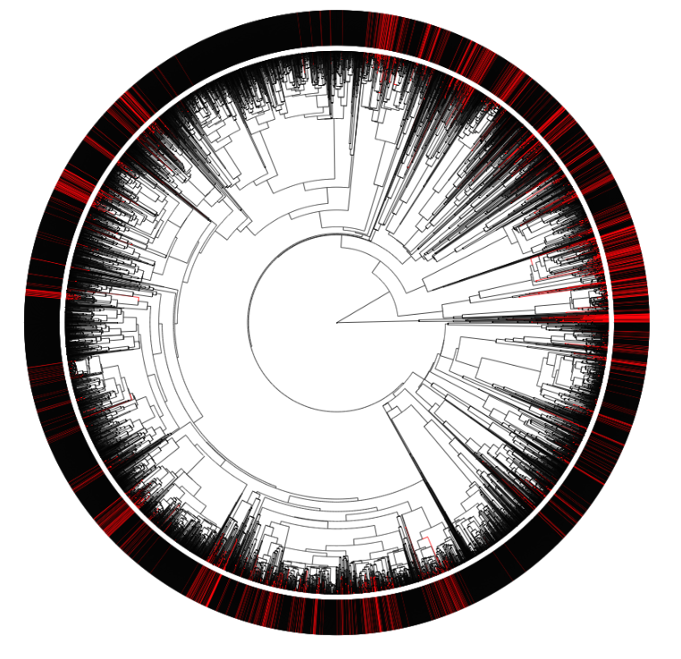
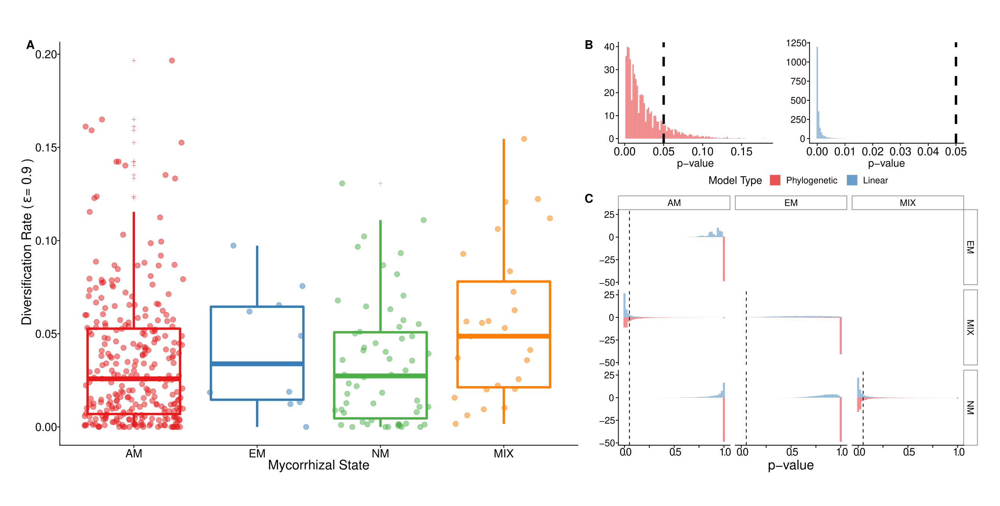

A brief story of (my) time
Dr. Gustavo Burin
August 04th, 2020
Aims
- Understand the effects of different diets on the diversification of the group
- Test the performance of widely used methods
- Assess the relationship between diversification dynamics and ecological role in frugivory networks
Methods
- diversitree
- 200 topologies (2 backbones)
- Bayesian framework: 2 months of processing

Rabosky & Goldberg 2015

Macroevolutionary imprints on the assembly of frugivory networks
Gustavo BURIN; Paulo GUIMARÃES; Tiago QUENTAL
In preparation
Louca & Pennell 2020

Thank you!
gustavoburin @ usp.br
@gustavoburin

1150 omnivore species
Predictable/abundant resources

Predictable/abundant resources

Unpredictable/scarce resources
Unpredictable/scarce resources

Take home messages
- Both models behave well in the very recent past
- Both attribute variation in diversification to speciation rates
- Difficulty in estimating variation in extinction rates
- Bad estimates at the root
- Do not agree on empirical trees
